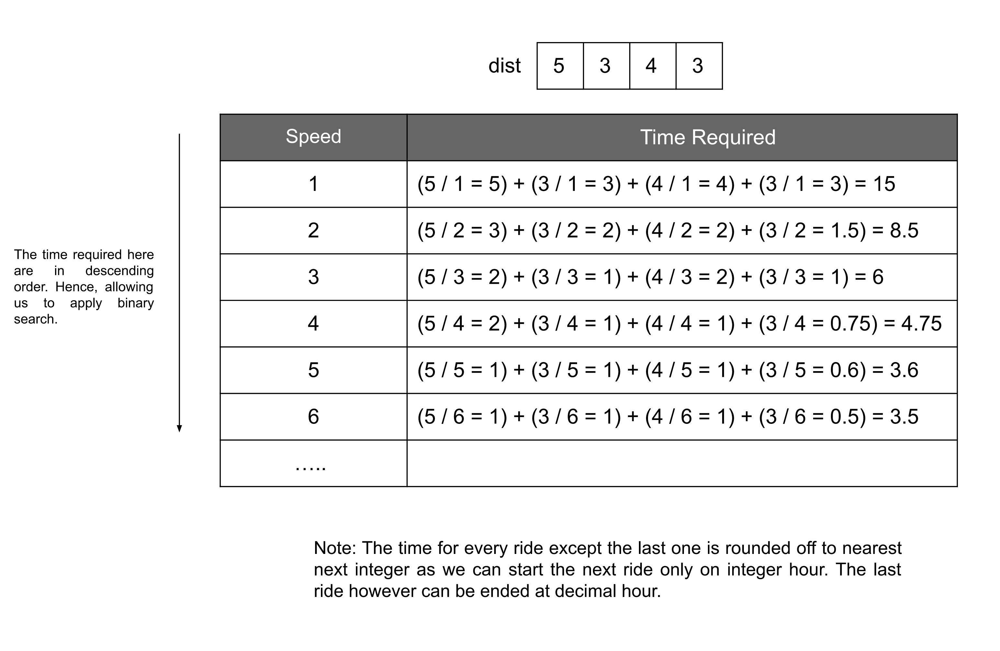

Intuition
There are NN trains that we
need to take in order; the ithi^{th}
train will ride for dist[i] distance. We need to complete this journey, i.e. ride all these trains
within hour time; hour is a decimal number representing the amount of time we have. We
need to return the minimum positive speed integer that is required. One more constraint we have is that each train
will depart at an integer hour, so if we completed our 1st1^{st}
ride at, say 2.4 hours, then we can only start riding the next train at 3rd3^{rd}
hour.
One hint in the problem description is that the answer speed will not exceed 10710^7. The
first naive approach we can apply is to do an exhaustive search over all the possible speeds we have. We can iterate
from 11
to 10710^7,
and the first number that can lead us to complete the journey within hour will be our answer. But how
can we find out if some speed can make us complete the journey within the constraint time? We can easily find the
time required for individual rides for each train, and then summing them up will give us the total time required. If
this total time is less than hour then it could be a possible answer; otherwise, not. This approach, as
we can observe, is not efficient; we need to iterate over the whole search space and then iterate over every train
to find the total time.
Can we somehow reduce our search space? Let's say the time required with speed s is t; then
it can be easily proved that the time required with a speed greater than s will always be less than or
equal to t. In other words, a higher speed will always require less or equal time. This implies that if
for a speed s the time required is less than the time needed hour, then we don't need to
look for the speeds greater than s as we need the smallest speed possible, in this case, our search
space should reduce down to left side of s, i.e. speeds less than s.

This theory leads us to think of binary search. We will check for the speed in the middle of our search space, and if
that is within hour time, our search is reduced to the left half of the current space, and if the time
is more than hour, then the search space will change to the right half of the current space. This way,
we will always be able to reduce our search space by half at every iteration.
Algorithm
Initialize three variables left, right and minSpeed.
i. left is the left end of our initial search space; hence it should be initialized to
1.
ii right is the right end of our initial search space; hence initialize it to 10710^7.
iii. minSpeed is the minimum speed required; this is the answer to our problem. Initialize it to
-1.
Do the following while left <= right:
i. Find the middle of the current search space as mid.
ii. Find the time required with speed mid. Add all the individual time for each train ride; note
that for all the rides except the last one, we need to round off the decimal to the next integer as we can
start the next train only at an integer hour. The last ride, however, can end at a decimal.
iii. If the time required is less than or equal to hour, it implies the mid could
be our answer. Hence store it in the variable minSpeed and shift the search space to the left
of mid.
iv. If the time required is more than hour, then mid as well as the integers left
of it cannot be the answer. Hence shift the search space to the right of mid.
Return minSpeed.
Implementation
Java
class Solution {
double timeRequired(int[] dist, int speed) {
double time = 0.0;
for (int i = 0 ; i < dist.length; i++) {
double t = (double) dist[i] / (double) speed;
// Round off to the next integer, if not the last ride.
time += (i == dist.length - 1 ? t : Math.ceil(t));
}
return time;
}
public int minSpeedOnTime(int[] dist, double hour) {
int left = 1;
int right = 10000000;;
int minSpeed = -1;
while (left <= right) {
int mid = (left + right) / 2;
// Move to the left half.
if (timeRequired(dist, mid) <= hour) {
minSpeed = mid;
right = mid - 1;
} else {
// Move to the right half.
left = mid + 1;
}
}
return minSpeed;
}
}
C++
class Solution {
public:
double timeRequired(vector& dist, int speed) {
double time = 0.0;
for (int i = 0 ; i < dist.size(); i++) {
double t = (double) dist[i] / (double) speed;
// Round off to the next integer, if not the last ride.
time += (i == dist.size() - 1 ? t : ceil(t));
}
return time;
}
int minSpeedOnTime(vector& dist, double hour) {
int left = 1;
int right = 1e7;
int minSpeed = -1;
while (left <= right) {
int mid = (left + right) / 2;
// Move to the left half.
if (timeRequired(dist, mid) <= hour) {
minSpeed = mid;
right = mid - 1;
} else {
// Move to the right half.
left = mid + 1;
}
}
return minSpeed;
}
};
Complexity Analysis
Here, NN is the number of rides, and KK is the size of the search space. For this problem, KK is equal to 10710^7.
Time complexity: O(NlogK)O(N \log K)
After each iteration, the search space gets reduced to half; hence the while loop will take logK\log K
operations. For each such operation, we need to call the timeRequired function, which takes
O(N)O(N) time. Therefore, the total time complexity
equals O(NlogK)O(N \log K).
Space complexity: O(1)O(1)
No extra space is required other than the three variables. Hence the space complexity is constant.